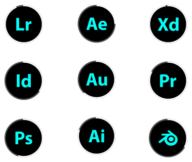

UI/UX Designer
Nihaal Nazeer is a Multidisciplinary Designer specialising in UI/UX Design , especially in new technology . He uses his powers to create innovative designs in the hopes of one day changing the world. Immersing users into the interface they are using can revolutionize the way they use the service. This philosophy helps him create designs that are engaging and aesthetic , while also being functional . After all, with great power, comes great responsibility.
Serione and Silklon (sister companies). Royal Garden Football Club.
Sesameed Education. Be known. Zarafet Boutique.
Sesameed Education. Aranya Johar and Yahya Bootwala (Influencers). Zarafet Boutique.
Co-head of Identity, Curation and Production Teams for " afterglow " exhibition in London . Jersey Design for Royal Garden Football Club. Commissioned Art and Design work.
Sesameed Education. Be known. Adhiban Bhaskaran (Chess Grandmaster).
Logo and Branding
Posters and Advertising
Other
Video Editing
BA (Hons) Graphic and Media Design ; 2022-2025 | London College of Communication (UAL) Certificate in Higher Education for Design, Screen and Media ; 2021-2022 | London College of Communication (UAL)
"A jack of all trades is a master of none , but oftentimes better than a master of one ."
SIMPLE PORTFOLIO HERE !